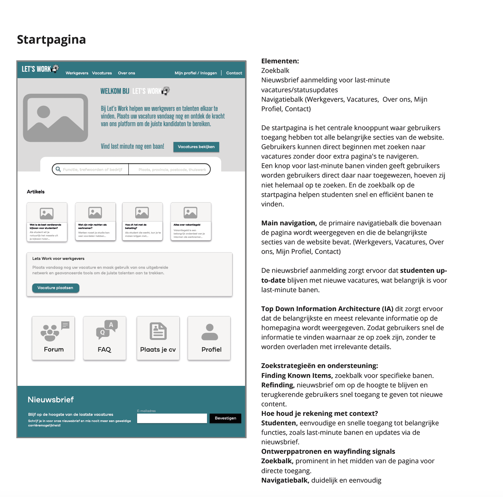
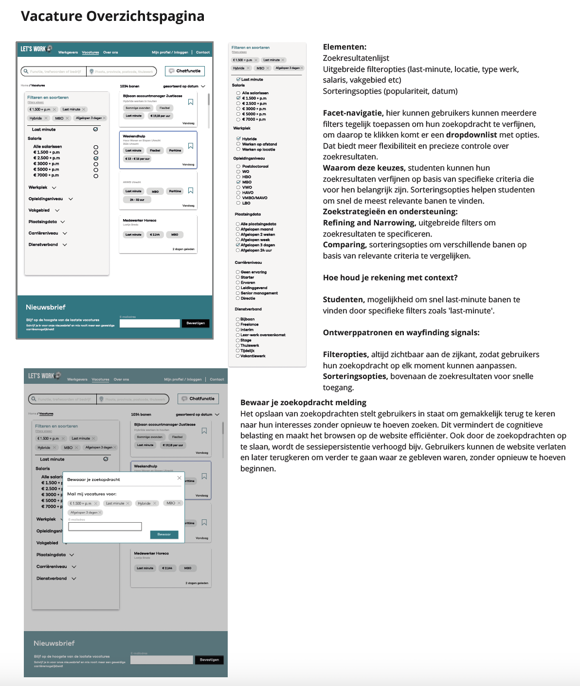
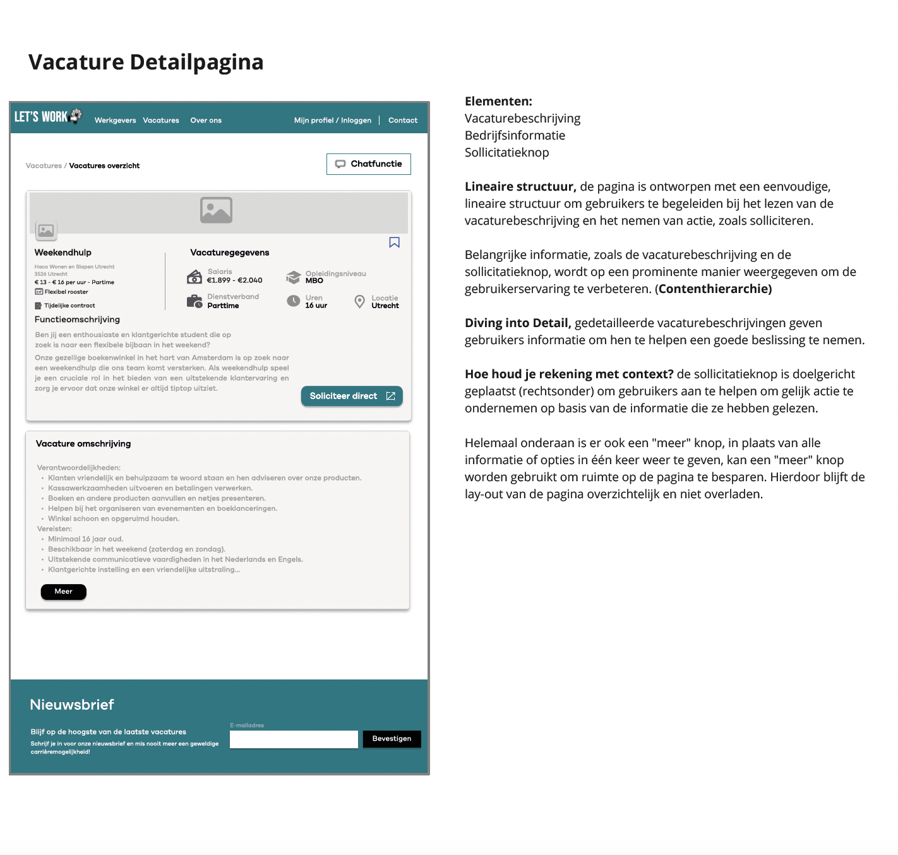
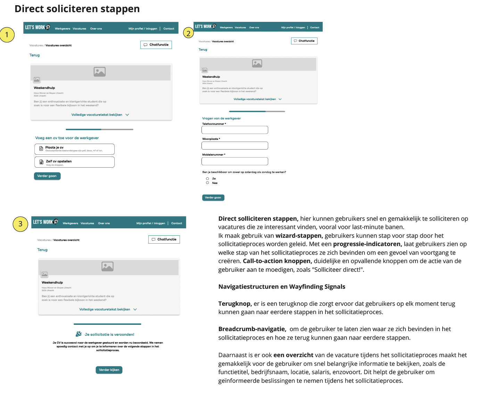
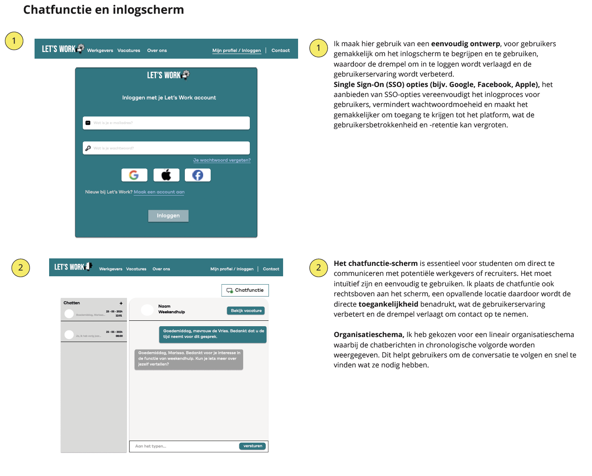

H2
    Deze app is speciaal ontworpen om studenten te helpen bij het vinden van tijdelijke en flexibele banen, zelfs last-minute.
Vanaf de startpagina kunnen gebruikers direct beginnen met zoeken via een handige zoekbalk. Daarnaast biedt de app uitgebreide filteropties, zoals locatie, werksoort en salaris, waardoor studenten eenvoudig de meest relevante vacatures vinden. Een nieuwsbrief houdt gebruikers op de hoogte van nieuwe en spoedvacatures, zodat ze geen kansen missen. De vacaturepagina geeft een duidelijke beschrijving van de baan, inclusief bedrijfsinformatie en een prominente knop om direct te solliciteren. Het sollicitatieproces is opgedeeld in eenvoudige stappen, met duidelijke knoppen zoals "Solliciteer direct!" en voortgangsindicatoren, zodat gebruikers precies weten waar ze staan. De app biedt ook een chatfunctie waarmee studenten direct contact kunnen opnemen met werkgevers, wat de communicatie soepel en snel maakt. Voor werkgevers zijn er verschillende abonnementen beschikbaar, zoals Zilver en Goud, waarmee ze vacatures kunnen plaatsen en kandidaten kunnen beoordelen. Het platform is intuïtief ontworpen, met een overzichtelijke navigatiebalk en een interface die werkt op zowel laptops als mobiele apparaten. Hierdoor kunnen studenten altijd en overal vacatures zoeken, solliciteren en contact leggen met werkgevers. De focus ligt op eenvoud, snelheid en flexibiliteit, wat deze app perfect maakt voor studenten die op zoek zijn naar werk dat past bij hun drukke leven.